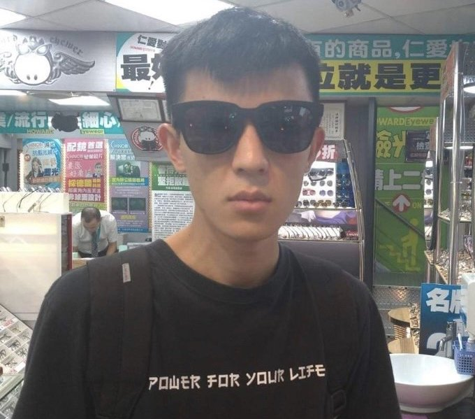
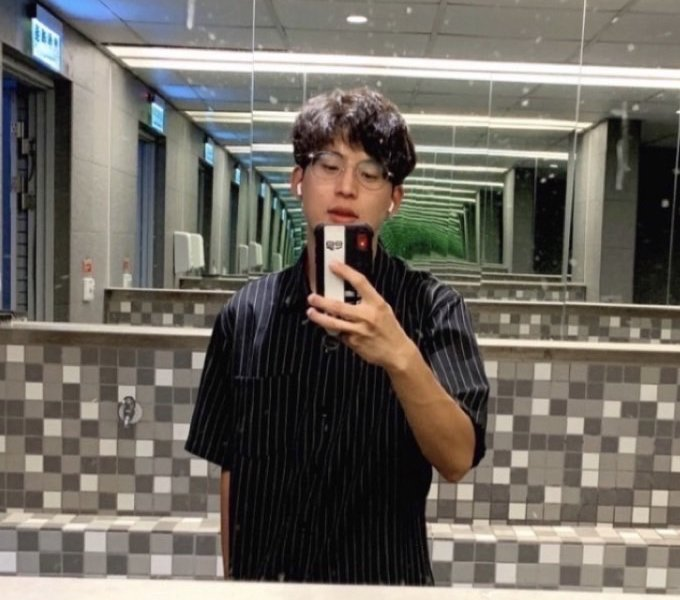
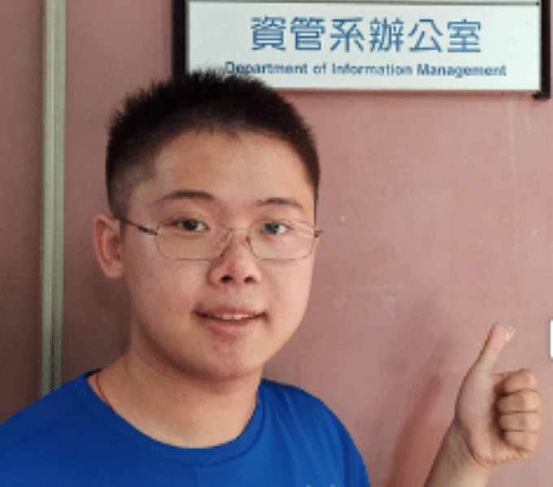
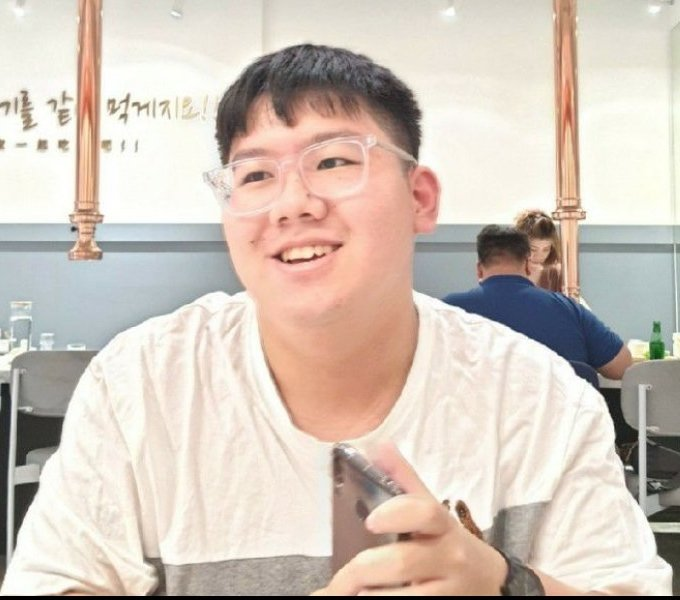

石一輝

- 心得(請觸碰)
-
感謝組員的共同努力，將
此次專案能夠圓滿完成，
一開始並不知道要做哪方
面的題目，通過不斷的討
論，確定方向。萬事開頭
難，在查到非常多的資料
之後，才摸索出來如何製
作，然後發揮大學之所長
，將理想化作現實。學習
是枯燥的，但是有一群志
同道合的夥伴相陪，也會
將枯燥變得有趣。
也非常感想資管系幫助我
個人的成長，了解到全人
發展對於人格之培養的重
要性。在學習方面雙輔財
金、工工系，讓我更全面
提升能力及了解自己本身
的極限；在生活方面習當
志工，接觸到人間百態，
讓我從不同角度看待世界
；在大學目標方面衝刺全
人標桿獎，讓我在大學畫
下一個完美的句號。
- 資管四乙
- 性別：男
- 生日：7/29
- 興趣：理財
- 一個追著錢跑的人
- 專業：Autocad、c 、Java、html
胡博凱

- 心得(請觸碰)
-
透過這次的專題，我們利
用Python進行手語翻譯，
從靜態辨識逐漸變成動態
辨別，感謝所有組員的努
力，讓我們一同完成本次
專案。此次的專案目標全
組成員達成一致共識，那
便是無營利導向是社會服
務、大學社會責任作為最
初的出發點亦是終點，我
們以主要受用群體-聾啞人
作為我們使用者分析的對
象，製作出該群體喜歡、
好上手的手語翻譯APP，
最終得到的佳作獎項也證
明我們組員以及專題的成
功，這其中的成功因素不
只是同學間的努力以及教
授的無微不至的用心給予
我們意見，才得以讓我們
本次專案成功圓滿完成。
- 資管四乙
- 性別：男
- 生日：3/13
- 興趣：彈琴
- 一個為了夢想努力的人
- 專業： android、Python 、Java、html
林鑫磊

- 心得(請觸碰)
-
在整個專題的製作過程中，
我學會了與團隊成員們一起
合作，運用大學生活以來老
師們所教授的知識，逐一運
用在專題上，讓之前的學習
是真的學會，學以致用沒有
白費。每個人擅長的地方都
有所不同，正好互補了我們
所欠缺的地方，一起互相學
習，互相成長，遇到困難時
也一起討論解決。從規劃到
實際設計，大家一起集思廣
益，分工合作，看著系統逐
漸的成型，達成我們預期的
目標，真是一個令人感動的
過程。感謝團隊的成員以及
指導教授，讓我從中學到了
不少分工合作經驗，學到以
前所欠缺的技能或不足之處
，讓我得以成長茁壯，不再
懵懵懂懂，可以勇敢向前，
披荊斬棘。
- 資管四乙
- 性別：男
- 生日：7/12
- 興趣：唱歌
- 一個追逐夢想，非常忙碌的人
- 專業： C、Python、Java、html
蘇宥嘉

- 心得(請觸碰)
-
這次專題很特別的地方在
於我們的Me語是一個公益
的APP，不是為了營利，
可以運用我們大學所學到
的知識來幫助溝通障礙者
們，何嘗不是一件美好的
事情呢?透過這次專題除了
可以和組員們一起合作，一
起討論，一起互相成長，也
可以磨練自己的思考以及實
作能力，平常上課坐在那邊
聽著教授講解，好像又聽進
去，可是等到要實際去執行
時卻什麼都做不出來，看著
我們這個專題從一個抽象的
想法變成一個實際可以使用
的系統還是很令人興奮的，
感謝教授的幫忙以及組員們
的努力才可以一起把這個Me語
完成。
- 資管四乙
- 性別：男
- 生日：5/02
- 興趣：研究3C
- 一個喜歡最新科技的人
- 專業：Python、c++ 、Java、html